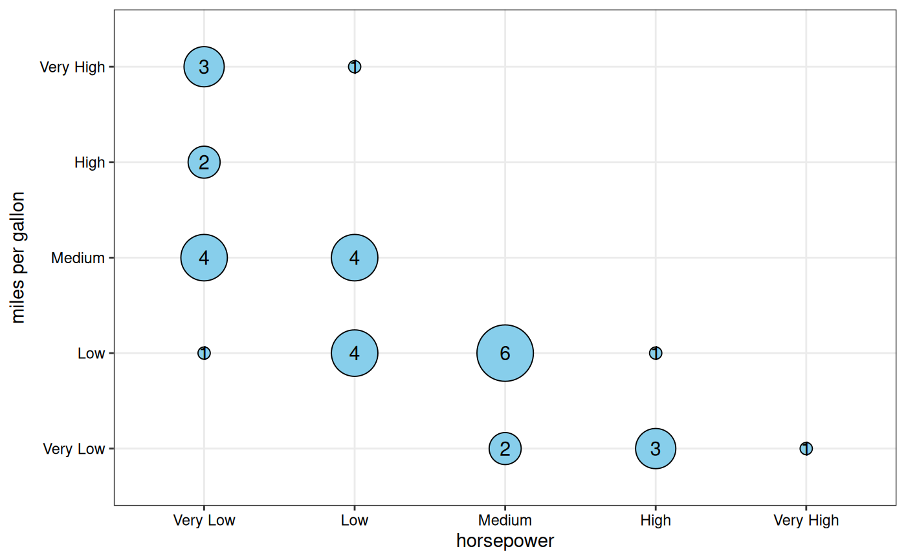
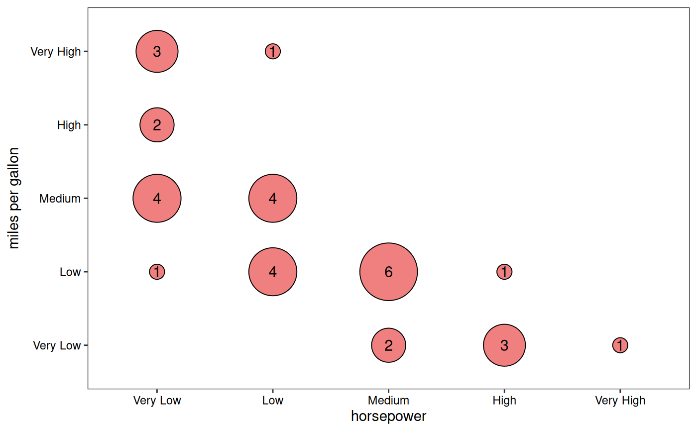
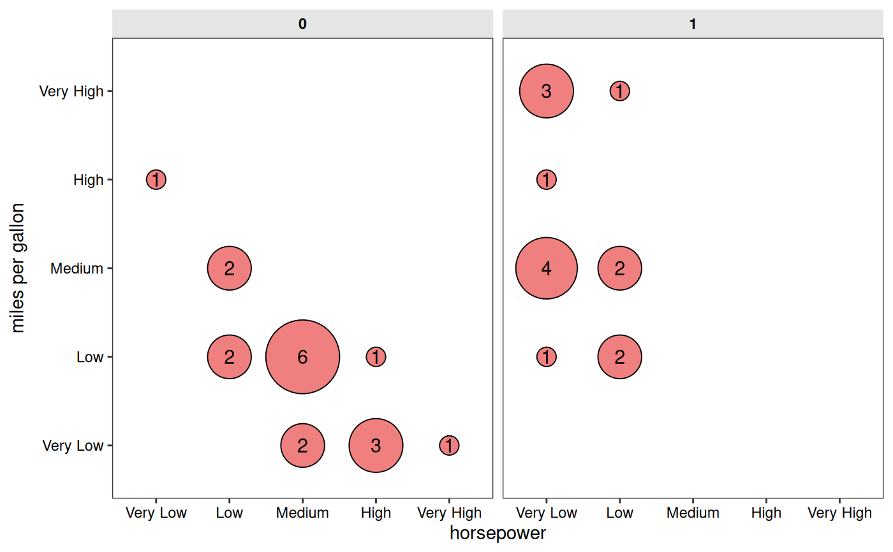

The function automatically computes frequency counts for each unique
combination of the x and y categorical variables using table().
Bubble sizes are scaled proportionally to represent counts, with the
range controlled by point_size_range. Useful for visualizing
cross-tabulations, confusion matrices, or any bivariate categorical data.
Usage
gg_conf(
data,
x,
y,
fill = "skyblue",
text_size = 4,
text_color = "black",
point_size_range = c(3, 15),
border_color = "black",
show_grid = TRUE,
expand = 0.15,
facet_x = NULL,
facet_y = NULL
)Arguments
- data
A data frame containing the categorical variables.
- x
Character string specifying the column name in
datafor the x-axis categorical variable.- y
Character string specifying the column name in
datafor the y-axis categorical variable.- fill
Character string specifying the fill color for bubbles. Default is "skyblue".
- text_size
Numeric value specifying the size of count labels. Default is 4.
- text_color
Character string specifying the color of count labels. Default is "black".
- point_size_range
Numeric vector of length 2 specifying the minimum and maximum bubble sizes. Default is
c(3, 15).- border_color
Character string specifying the color of bubble borders. Default is "black".
- show_grid
Logical indicating whether to show major grid lines. Default is TRUE.
- expand
Numeric value specifying the expansion multiplier for both axes. Default is 0.15.
- facet_x
Character string specifying an optional column name in
datafor horizontal faceting. Default is NULL (no faceting).- facet_y
Character string specifying an optional column name in
datafor vertical faceting. Default is NULL (no faceting).
Value
A ggplot2 object showing the confusion table as a bubble plot. The plot displays:
Bubbles at each x-y combination, sized by frequency count
Count labels displayed in the center of each bubble
Optional faceting for additional categorical variables
Customizable colors, sizes, and grid visibility
Examples
data(mtcars)
# Create synthetic categorical variables
# Bin horsepower & fuel efficiency into ordered categories
mtcars$horsepower <-
cut(mtcars$hp, breaks = 5,
labels = c("Very Low", "Low", "Medium", "High", "Very High"))
mtcars$`miles per gallon` <-
cut(mtcars$mpg, breaks = 5,
labels = c("Very Low", "Low", "Medium", "High", "Very High"))
# Base plot
gg_conf(data = mtcars, x = "horsepower", y = "miles per gallon")

# Custom styling
gg_conf(data = mtcars, x = "horsepower", y = "miles per gallon",
fill = "lightcoral", point_size_range = c(5, 20),
show_grid = FALSE)

# With faceting by "vs" column
gg_conf(data = mtcars, x = "horsepower", y = "miles per gallon",
fill = "lightcoral", point_size_range = c(5, 20),
facet_x = "vs",
show_grid = FALSE)
